VOY a volver a Altos Hornos de Vizcaya en el puesto que sea más conveniente para la empresa.
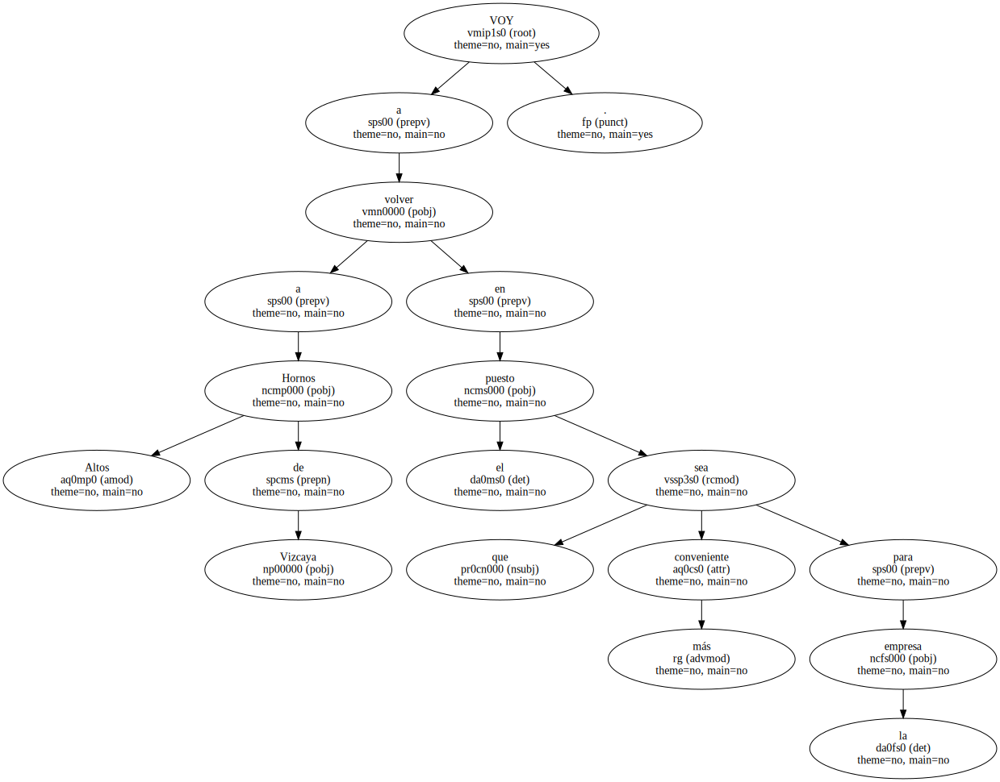Lo que sí puedo asegurar es que no estaré en un alto cargo como se ha dicho - , ha afirmado a tiempo el ex ministro de Interior José Luis Corcuera , quien la pasada semana ultimaba las condiciones de su reingreso en la empresa siderúrgica en la que comenzó a trabajar como aprendiz cuando tenía 14 años.
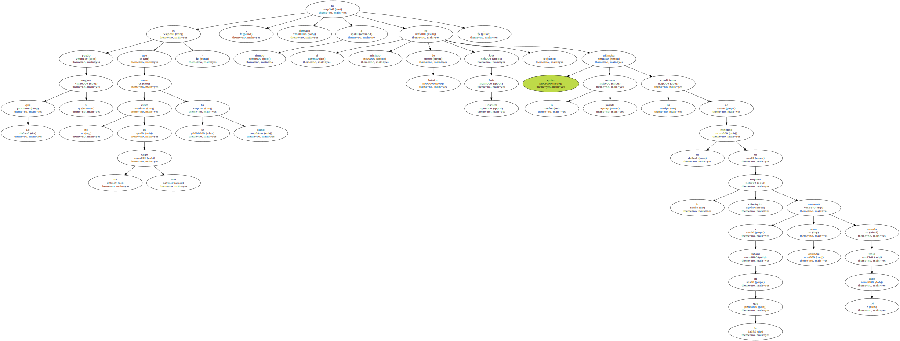La vuelta está prevista para el día 1 de junio.
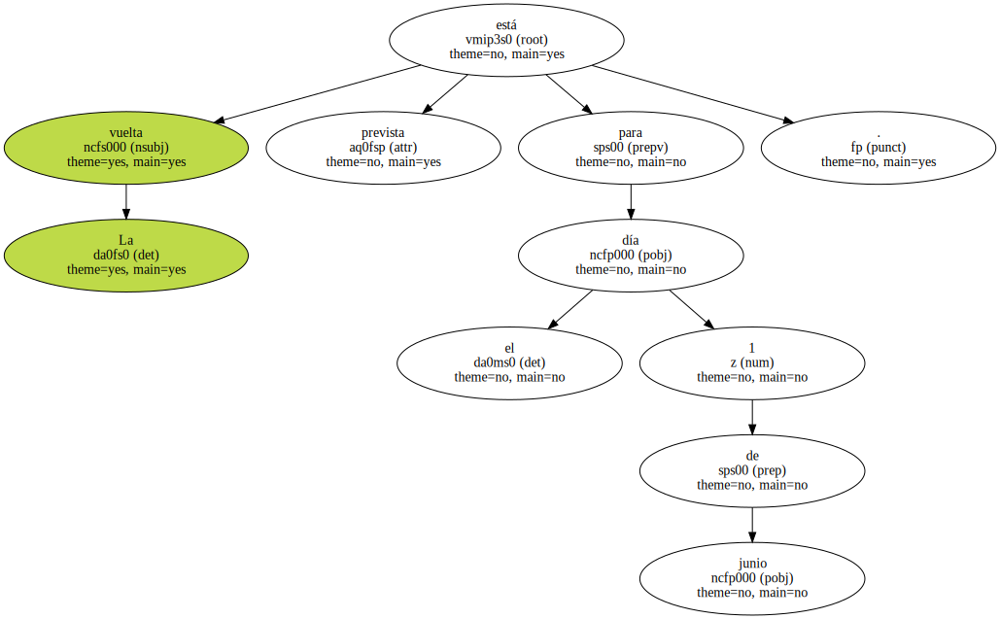Corcuera , que pidió una excedencia por su actividad política , solicitó la reincorporación en Altos Hornos de Vizcaya el pasado 14 de mayo , cinco días después de su renuncia al acta de diputado como consecuencia del escándalo Roldán.
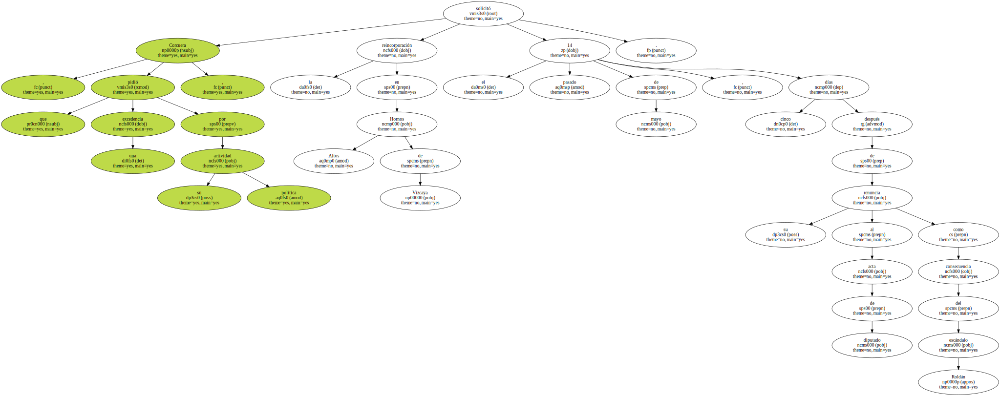Según fuentes empresariales , el ex ministro trabajará en la delegación de la compañía en la calle Castellana , en Madrid , probablemente en el departamento comercial , en el que ya estuvo destinado en su última etapa en la empresa y donde ahora intentarán aprovechar sus conocimientos del sector y sus contactos sindicales y convertirle , pese a lo que él dice , en un ejecutivo.
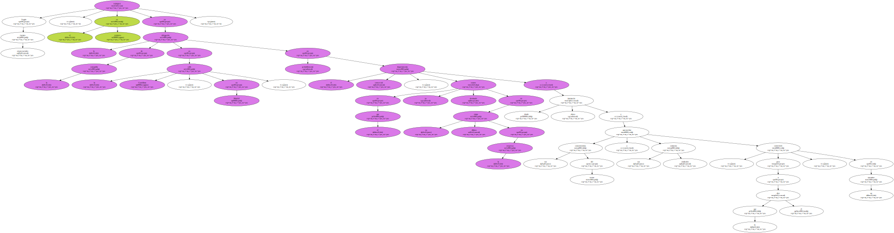Corcuera se ha negado a precisar la categoría con que regresa , - ya que - según dijo - estoy pendiente de una última conversación - , pero Tiempo ha podido saber que es casi seguro que su puesto sea como en su última etapa , de los llamados de fuera de convenio y donde los sueldos brutos oscilan entre las 200.000 pesetas que puede cobrar un gestor de ventas y las 800.000 de un director general.

Corcuera ha anunciado que no renunciará a la pensión de 663.126 pesetas brutas mensuales que cobran los ex ministros durante dos años , siempre que no ocupen otro cargo público : - Yo cumpliré la ley.
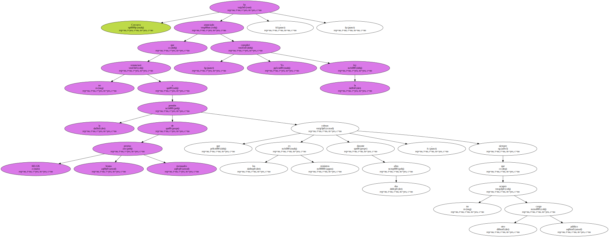Si trabajo , ganaré mi sueldo , y si , como consecuencia de las leyes , tengo derecho a seguir cobrando una remuneración , pues.
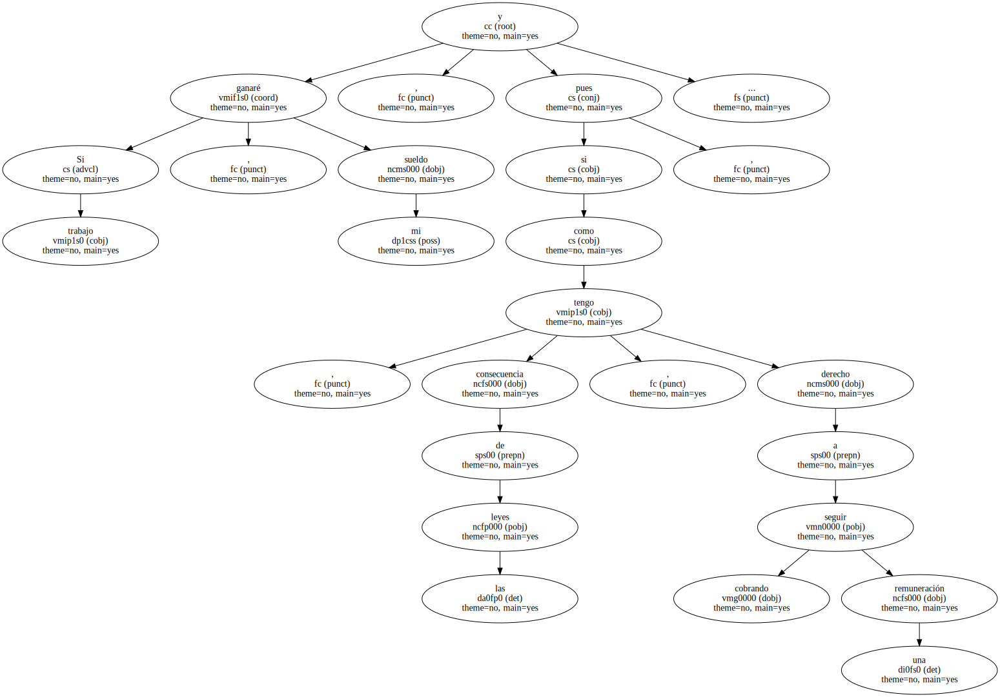Yo soy partidario de cumplir la ley -.
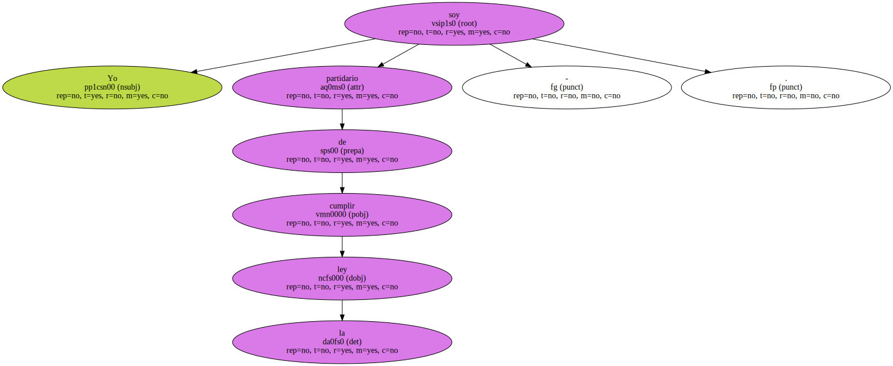Respecto a su decisión de quedarse en Madrid en vez de regresar a Altos Hornos en Vizcaya , donde trabajó como electricista hasta 1976 en que fue liberado por UGT , el ex ministro no tiene dudas : - Me es imposible volver a Vizcaya . Mi casa y mis hijas están en Madrid . Sería muy difícil que volviera a Bilbao -.
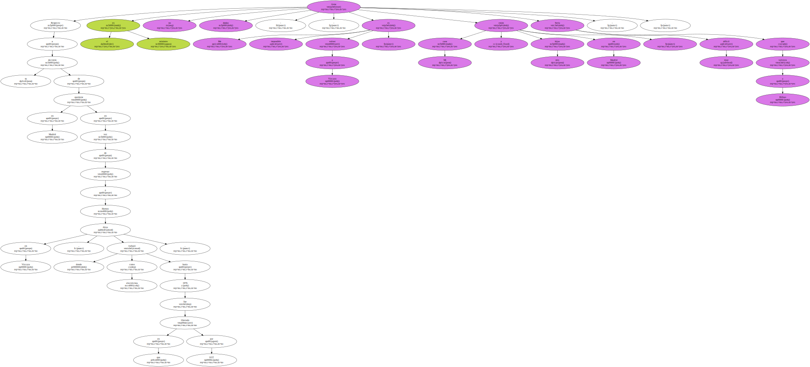La decisión de Corcuera no ha extrañado al grupo de amigos que comparten con él las tertulias de café , las partidas de mus y las tardes de toros , aunque este año ha preferido engancharse a Canal Plus en vez de ir a Las Ventas.
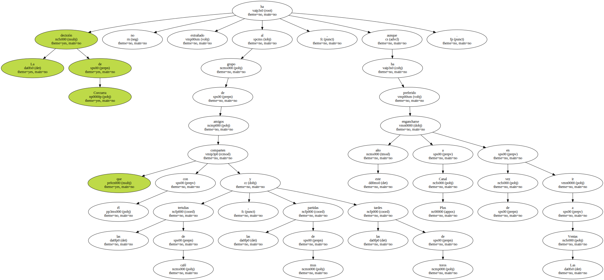Antonio Puerta conoce a José Luis Corcuera desde los años 70 , cuando ambos estaban en UGT-Metal.
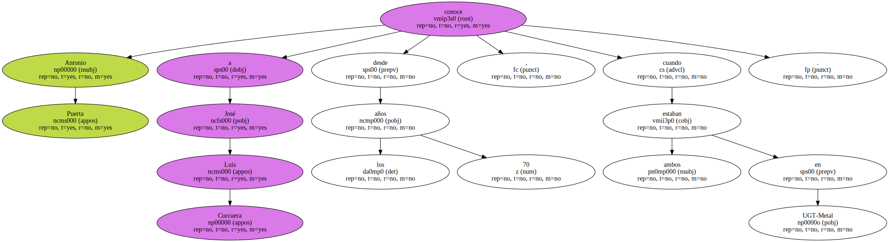En aquel tiempo vivía con él y con un tercero en - una comuna - que se disolvió cuando el ex ministro trajo a vivir a su familia a Madrid.
Puerta y Corcuera mantienen hoy la vecindad , ya que las casas de ambos están en una misma calle de la urbanización Novaserra , en Majadahonda ( Madrid ).
Puerta daba por hecho la vuelta de José Luis Corcuera a Altos Hornos : - Al fin y al cabo , ese principio de que los cargos del sindicato no se desvinculen de la empresa lo defendimos él y yo -.
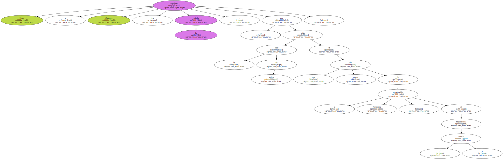